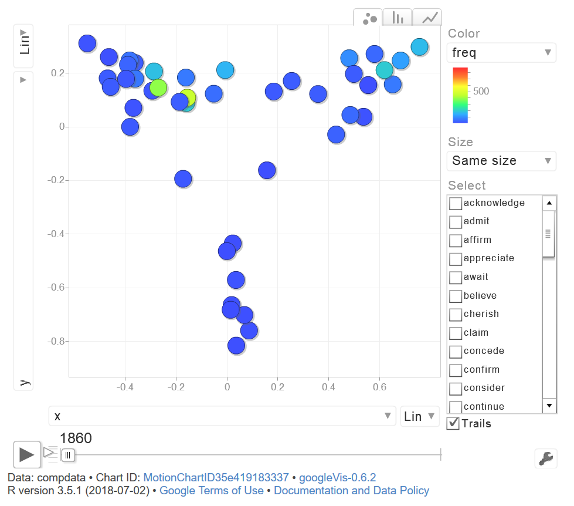

Creating motion charts using R
Martin Schweinberger
2020-09-29

Introduction
This tutorial introduces motion charts in R. The entire R markdown document for this tutorial can be downloaded here. Motion charts are dynamic charts that are used to explore changes in several variables across time. Motion charts are rendered within the browser using Flash which means that when you create a motion chart using the plot function, we new window in your browser will open and display the motion chart.
Preparation and session set up
This tutorial is based on R. If you have not installed R or are new to it, you will find an introduction to and more information how to use R here. For this tutorials, we need to install certain packages from an R library so that the scripts shown below are executed without errors. Before turning to the code below, please install the packages by running the code below this paragraph. If you have already installed the packages mentioned below, then you can skip ahead ignore this section. To install the necessary packages, simply run the following code - it may take some time (between 1 and 5 minutes to install all of the libraries so you do not need to worry if it takes some time).
# clean current workspace
rm(list=ls(all=T))
# set options
options(stringsAsFactors = F) # no automatic data transformation
options("scipen" = 100, "digits" = 4) # suppress math annotation
op <- options(gvis.plot.tag='chart') # set gViz options
# install libraries
install.packages(c("googleVis", "dplyr"))Once you have installed R and initiated the session by executing the code shown above, you are good to go.
1 Getting started with Motion Charts
To get started with motion charts, we load the googleVis package and use an in-built data set called Fruits.
# load library
library(googleVis)
# inspect fruid data set
str(Fruits)## 'data.frame': 9 obs. of 7 variables:
## $ Fruit : Factor w/ 3 levels "Apples","Bananas",..: 1 1 1 3 2 3 2 3 2
## $ Year : num 2008 2009 2010 2008 2008 ...
## $ Location: Factor w/ 2 levels "East","West": 2 2 2 1 1 1 1 1 1
## $ Sales : num 98 111 89 96 85 93 94 98 81
## $ Expenses: num 78 79 76 81 76 80 78 91 71
## $ Profit : num 20 32 13 15 9 13 16 7 10
## $ Date : Date, format: "2008-12-31" "2009-12-31" ...We can now generate a motion chart using the gvisMotionChart function which takes a data set, an id-variable and a time-variables as its main arguments.
# create motion chart object
M <- gvisMotionChart(Fruits, idvar = "Fruit", timevar = "Year")Next, We display the motion chart using the plot function.
print(M, 'chart')If you execute this code on your computer, a browser window should open and and if you accept Adobe Player, then motion chart showing the population size by country should pop up. You can hoover over any country and see its population size.

The motion chart shows changes in Sales (x-axis) and Expenses (y-axis) of apples, bananas, and oranges over time.
2 Motion Charts and Language Data
We now turn to a linguistic example. The phenomenon we will display relates to different verb types and the complement clauses that they take.
# read in data
compdata <- read.table("https://slcladal.github.io/data/compdata.txt", sep = "\t", header = T)
# inspect data structure
str(compdata)## 'data.frame': 660 obs. of 5 variables:
## $ x : num -0.2938 -0.3893 -0.5486 0.0155 0.0874 ...
## $ y : num 0.135 0.232 0.312 -0.682 -0.759 ...
## $ decade: int 1860 1860 1860 1860 1860 1860 1860 1860 1860 1860 ...
## $ verb : chr "acknowledge" "admit" "affirm" "appreciate" ...
## $ freq : num 12.58 34.35 8.21 1.52 5.96 ...# create motion chart object
MC <- gvisMotionChart(compdata, idvar = "verb", timevar = "decade")print(MC, 'chart')
3 Linguistic Example: which verbs take which complement clause type?
# load data
convdata <- read.table("https://slcladal.github.io/data/convdata.txt", sep = "\t", header = T)
# inspect data structure
str(convdata)## 'data.frame': 1785 obs. of 6 variables:
## $ VERB : chr "ACCOUNT" "ACCOUNT" "ACCOUNT" "ACCOUNT" ...
## $ DECADE : int 1860 1870 1880 1890 1900 1910 1920 1930 1940 1950 ...
## $ verbs : num 40.2 42.3 40.2 38 36.8 ...
## $ nouns : num 141 144 128 117 127 ...
## $ freq : num 181 186 168 155 164 ...
## $ skewedness: num -100.6 -101.5 -87.4 -79.5 -90 ...# create motion chart object
MC <- gvisMotionChart(convdata, idvar = "VERB", timevar = "DECADE")print(MC, 'chart')# load data
ampadjdata <- read.table("https://slcladal.github.io/data/collex_decade.txt", sep = "\t", header = T)
# load library
library(dplyr)
# process data
ampadjdata <- ampadjdata %>%
select(Decade, Amp, Adjective, OBS) %>%
rename(Frequency = OBS) %>%
mutate(Bigram = paste(Amp, Adjective, sep = "_")) %>%
group_by(Decade, Bigram) %>%
summarise(Frequency = sum(Frequency))
# inspect data
head(ampadjdata)## # A tibble: 6 x 3
## # Groups: Decade [1]
## Decade Bigram Frequency
## <int> <chr> <int>
## 1 1870 pretty_amiable 0
## 2 1870 pretty_amusing 0
## 3 1870 pretty_angry 0
## 4 1870 pretty_annoyed 0
## 5 1870 pretty_bad 0
## 6 1870 pretty_beautiful 0# create motion chart
MC <- gvisMotionChart(ampadjdata, idvar = "Bigram", timevar = "Decade")plot(MC)## starting httpd help server ... doneintsaus <- read.table("https://slcladal.github.io/data/datadf5.txt",
sep = "\t", header = T)
intsaus <- intsaus[intsaus$int == 1,]
intsaus <- intsaus[intsaus$txtyp == "PrivateDialogue",]
# label infrequent amplifier as "other"
freqpinttb <- table(intsaus$pint)
freqpint <- names(freqpinttb)[which(freqpinttb >= 10)]
intsaus$pint <- as.vector(unlist(sapply(intsaus$pint, function(x){
x <- ifelse(x %in% freqpint, x, "other")
})))
# label infrequent adjective as "other"
freqadjtb <- table(intsaus$adj)
freqadj <- names(freqadjtb)[which(freqadjtb >= 20)]
intsaus$adj <- as.vector(unlist(sapply(intsaus$adj, function(x){
x <- ifelse(x %in% freqadj, x, "other")
})))
table(intsaus$pint)
str(intsaus)t1 <- ftable(intsaus$pint, intsaus$adj, intsaus$age)
t1## Set options back to original options
options(op)Citation & Session Info
Schweinberger, Martin. 2020. Creating motion charts using R. Brisbane: The University of Queensland. url: https://slcladal.github.io/motion.html (Version 2020.09.27)
@manual{schweinberger2020motion,
author = {Schweinberger, Martin},
title = {Creating motion charts using R},
note = {https://slcladal.github.io/motion.html},
year = {2020},
organization = "The University of Queensland, Australia. School of Languages and Cultures},
address = {Brisbane},
edition = {2020/09/27}
}sessionInfo()## R version 4.0.2 (2020-06-22)
## Platform: x86_64-w64-mingw32/x64 (64-bit)
## Running under: Windows 10 x64 (build 18362)
##
## Matrix products: default
##
## locale:
## [1] LC_COLLATE=German_Germany.1252 LC_CTYPE=German_Germany.1252
## [3] LC_MONETARY=German_Germany.1252 LC_NUMERIC=C
## [5] LC_TIME=German_Germany.1252
##
## attached base packages:
## [1] stats graphics grDevices utils datasets methods base
##
## other attached packages:
## [1] dplyr_1.0.2 googleVis_0.6.6
##
## loaded via a namespace (and not attached):
## [1] knitr_1.30 magrittr_1.5 tidyselect_1.1.0 R6_2.4.1
## [5] rlang_0.4.7 fansi_0.4.1 stringr_1.4.0 tools_4.0.2
## [9] xfun_0.16 utf8_1.1.4 cli_2.0.2 htmltools_0.5.0
## [13] ellipsis_0.3.1 assertthat_0.2.1 yaml_2.2.1 digest_0.6.25
## [17] tibble_3.0.3 lifecycle_0.2.0 crayon_1.3.4 purrr_0.3.4
## [21] vctrs_0.3.4 codetools_0.2-16 glue_1.4.2 evaluate_0.14
## [25] rmarkdown_2.3 stringi_1.5.3 compiler_4.0.2 pillar_1.4.6
## [29] generics_0.0.2 jsonlite_1.7.1 pkgconfig_2.0.3